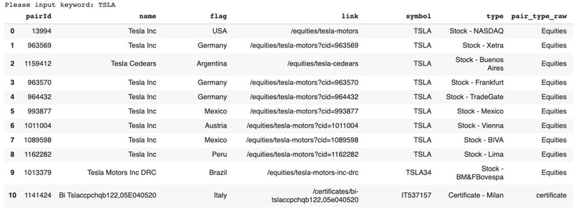

玩開股票都會知道，investing.com 係其中一個好強大嘅投資資訊平台，可以話係免費版嘅Bloomberg，入面有好豐富嘅database，包括~40000 stocks, ~80000 funds, ~10000 etfs,~8000 indices, ~3000 crytos 嘅historical data, fundamentals, news......等等，可以話係滿足曬基本分析同技術分析嘅朋友仔
點解唔用api？自己scrape一黎免費，二黎冇上限冇limit，三黎可以自己控制data嘅format，個flexibility 大好多
當然，github其實都有類似嘅package opened to everyone，例如investpy，但係佢嘅用法其實都幾複雜，例如下載唔同交易商品要call唔同嘅function，同埋要輸入investing.com define 嘅名而唔係普遍報價網嘅symbol，每次下載數據都要上investing.com 搵個名叫咩，都幾麻煩
之後會一連串教大家點scrape investing.com，而今次首先教大家search function 同埋攞相關新聞content，下次會再教點樣下載歷史數據等等
👇🏻👇🏻Python code (Patrons Only)👇🏻👇🏻